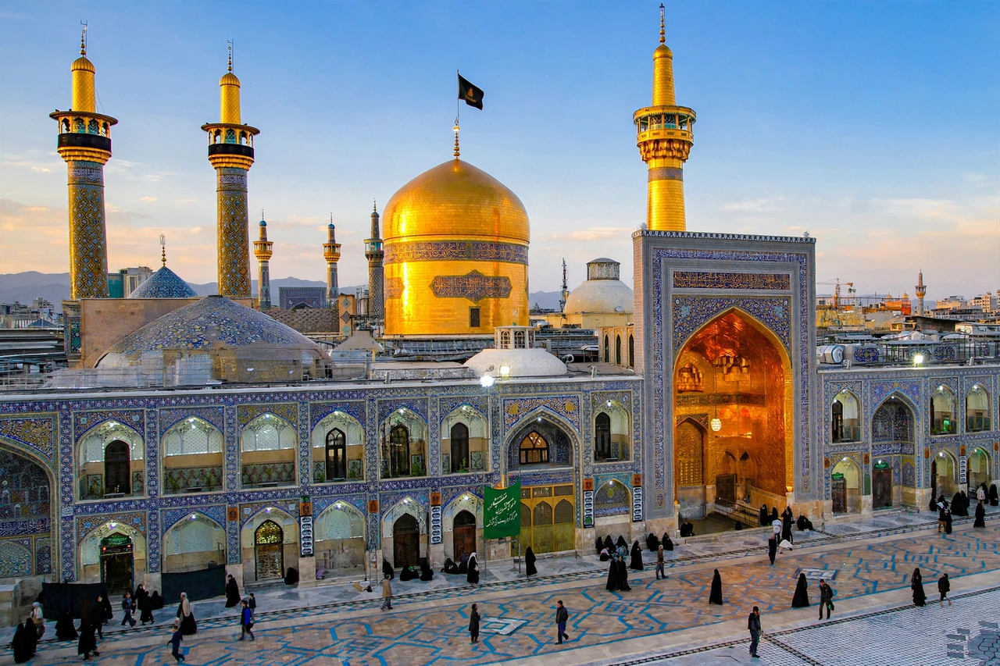

Shia Islam is the second-largest branch of Islam, comprising roughly 10–13% of the world's Muslims. Shia Muslims believe that the Prophet Muhammad designated his cousin and son-in-law Ali ibn Abi Talib as his successor and the first Imam — the rightful religious and political leader of the Muslim community. The word "Shia" derives from Shi'at Ali, "the party of Ali". Major Shia populations live in Iran, Iraq, Azerbaijan, Bahrain, Lebanon, Yemen, and South Asia.

| Shia Islam | |
|---|---|
| Adherents | ~150–200 million worldwide |
| Key figure | Ali ibn Abi Talib, first Imam |
| Major branches | Twelvers, Ismailis, Zaydis |
| Sacred cities | Najaf and Karbala (Iraq); Qom and Mashhad (Iran) |
| Major holiday | Ashura (martyrdom of Husayn) |
The divide originated in the succession crisis after Muhammad's death in 632 CE: while the majority accepted Abu Bakr as caliph, Ali's supporters held that leadership belonged to the Prophet's family (Ahl al-Bayt). Ali became the fourth caliph (656–661) and was assassinated in Kufa. His son Husayn's refusal to pledge allegiance to the Umayyad caliph Yazid led to Husayn's martyrdom at the Battle of Karbala in 680 CE — the defining event of Shia identity, commemorated each year on Ashura with mourning rituals.
Over the following centuries Shia communities developed distinct doctrines of the Imamate. Twelver Shi'ism, the largest branch, recognises a line of twelve Imams, the last of whom (Muhammad al-Mahdi) is believed to be in occultation since 874 and to return as the Mahdi. Shia dynasties such as the Fatimids in Egypt and, decisively, the Safavids — who made Twelver Shi'ism the state religion of Persia from 1501 — shaped the modern Shia world. In 1979 the Iranian Revolution established a theocratic republic under the doctrine of velayat-e faqih (guardianship of the jurist).
Shia theology shares Islam's core tenets — monotheism, prophecy, and the Quran — and adds the Imamate as a pillar: the Imams are held to be divinely guided and infallible interpreters of the faith. Twelver jurisprudence (Ja'fari school) permits temporary marriage (mut'ah) and differs from Sunni schools on some ritual details, such as combining certain daily prayers. Devotional life includes pilgrimage (ziyara) to the shrines of the Imams, passion plays (ta'ziya) re-enacting Karbala, and the Arbaeen pilgrimage in Iraq, one of the largest religious gatherings in the world.
Shia form majorities in Iran, Iraq, Azerbaijan, and Bahrain, and significant minorities in Lebanon, Yemen, Kuwait, Saudi Arabia's Eastern Province, Pakistan, and India. Relations with the Sunni majority have ranged from coexistence and shared scholarship to sectarian conflict, most violently in recent decades in Iraq, Syria, and Yemen.